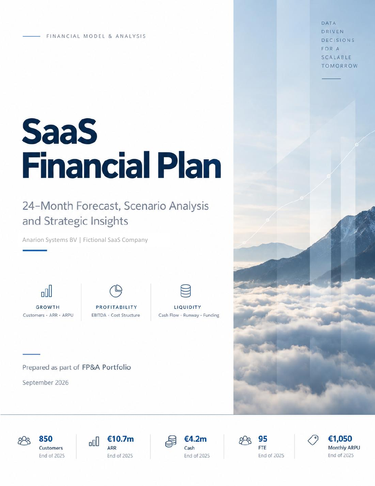
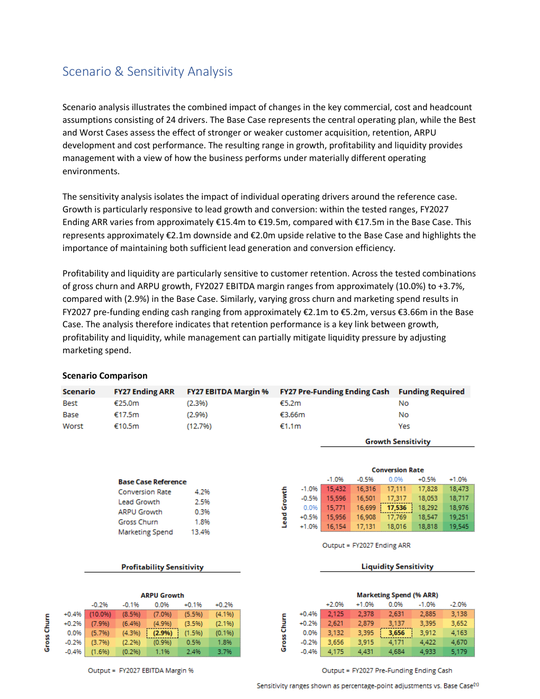

From operating drivers to management decisions
The portfolio models a fictional SaaS scale-up over a 24-month forecast horizon. It connects customer acquisition, retention, ARPU, headcount and operating-cost assumptions to the P&L, balance sheet, cash flow key SaaS metrics and enterprise valuation using DCF, trading comparables and precedent transactions.
The model outputs are translated into an Executive Dashboard and supporting Financial Plan and Valuation Analysis documents covering growth, profitability, liquidity, scenario analysis, key risks, management actions and valuation assumptions.

Model highlights
Driver-based forecasting
Revenue, customer, ARPU, churn, headcount and operating-cost drivers feed a monthly operating forecast.
Cash flow & runway
Integrated liquidity planning, free cash flow breakeven, runway and external funding requirements.
Scenario & sensitivity analysis
Base, Best and Worst cases plus sensitivities around acquisition, retention, monetization and spending.
SaaS metrics
ARR/MRR, churn, LTV/CAC, CAC payback, gross margin, Rule of 40 and operating-efficiency metrics.
Executive Dashboard
Key financial and operating outputs summarized for management review and decision support.
Valuation analysis
DCF (perpetuity growth and exit multiple), WACC, trading comparables and precedent transactions, with an accompanying valuation memo.
Management analysis
Financial outputs translated into growth, profitability and liquidity insights, key risks and actions.

Financial Plan & Analysis
The accompanying seven-page Financial Plan interprets the model rather than simply presenting outputs. It reviews growth and customer performance, profitability and operating efficiency, cash flow and liquidity, scenario and sensitivity analysis, and key management risks and actions.
In the Base Case, the analysis follows the path from €10.7m ending ARR at FY2025 to €17.5m in FY2027 and assesses the operating leverage and liquidity required to support that growth.
Valuation Analysis
The expanded financial model includes enterprise and equity valuation using two discounted cash flow approaches, trading comparables and precedent transactions. The accompanying Valuation Analysis explains the assumptions, cross-checks and key risks.
The four base methods indicate an average enterprise value of approximately €41.4m, with DCF valuations around €44–45m. These are illustrative outputs for the fictional case company, not a market appraisal.